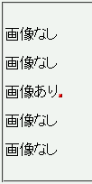
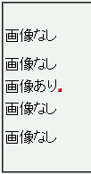

img要素など置換要素を含む行の前後では、行ボックスの高さがline-heightプロパティの指定値より小さくなる。
<p style="line-height:2;">画像なし<br> 画像なし<br> 画像あり<img src="img02.png" alt=""><br> 画像なし<br> 画像なし</p>
画像なし
画像なし
画像あり
画像なし
画像なし
行ボックスの高さを文字高さの2倍に設定しています。
Netscape7.1標準モード
WinIE6.0標準モード
WinIE6.0の標準モードと互換モードで不具合の発生を確認しました。